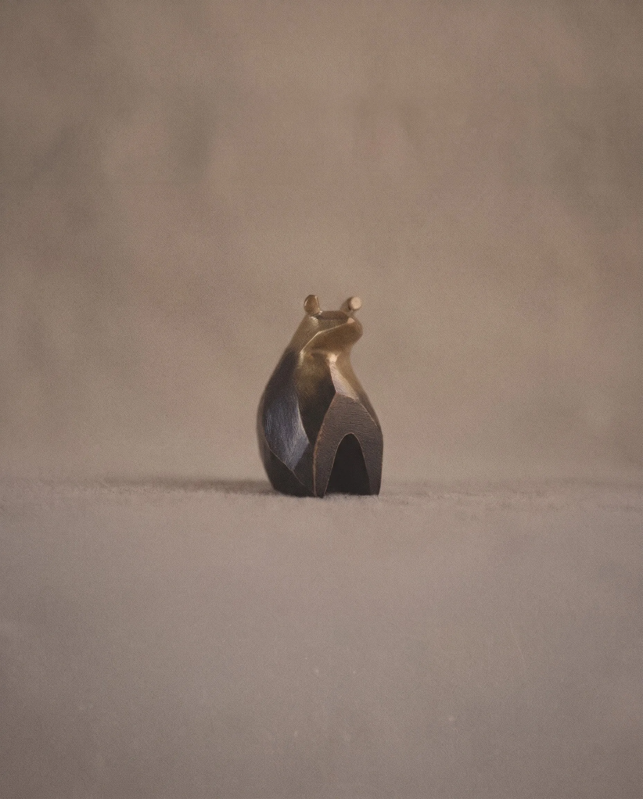
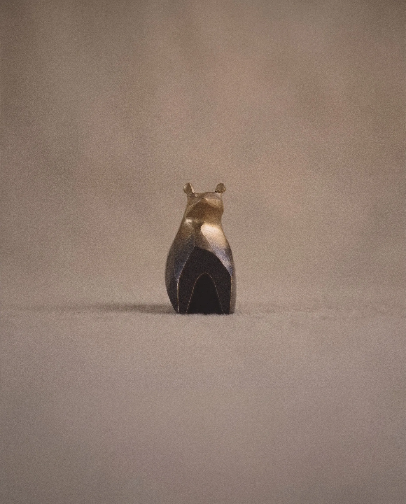
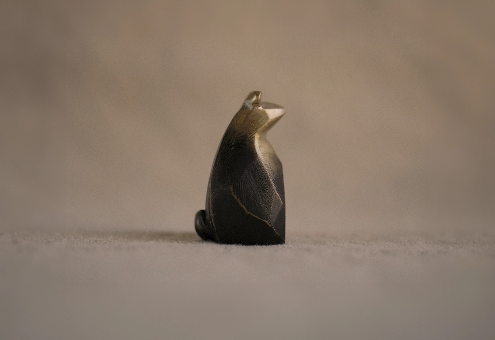
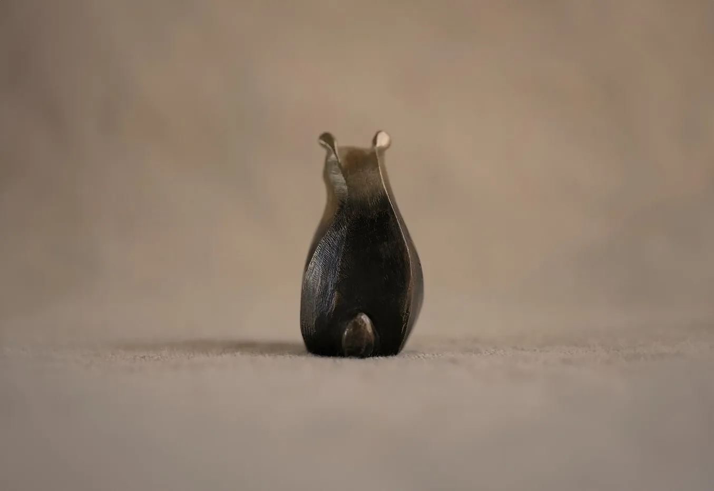
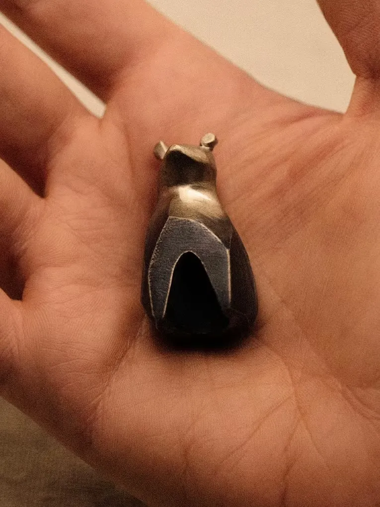
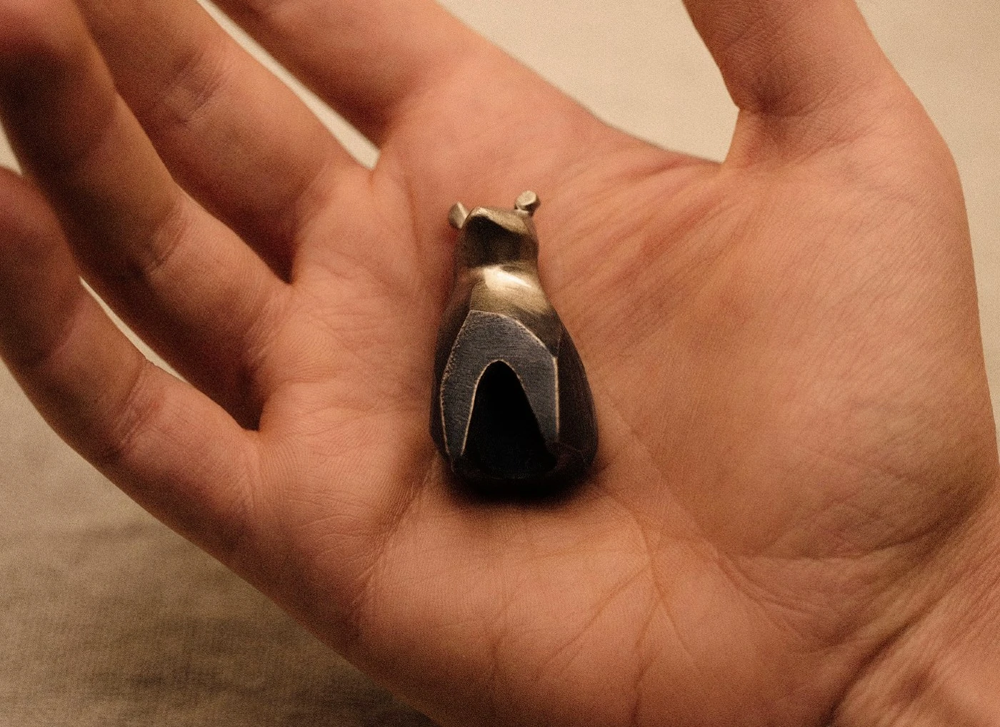

Guardian of Forests and Rivers
Ori
$220
Field Notes
Broad, round-shouldered solid bronze that sits heavy and quiet in the palm. Each winter solstice it gives off a faint warmth; keepers report fewer drafts. Its wide planes are smoothed and patinated slowly by hand.
Bronze is meant to be handled. The patina darkens where your thumb sits and brightens where it rubs, so over time it records how you hold it. To keep the surface as it is, wipe it with a soft dry cloth. Avoid polish; it takes the patina with it.
Solid bronze; Ombré patina
Each piece is made to order; please allow up to 10 business days before it ships. Standard shipping takes 3–7 business days, international 5–10. Pieces in original condition (excluding custom work) may be returned within 14 days of delivery for store credit. If a piece doesn't fit, we'll gladly help you find the right size. Contact us to begin.
Ori keeps a patient watch over forests, rivers and the households that take it in. It asks for very little beyond a windowsill and the occasional hand. In the depths of winter, keepers swear the room feels a degree or two warmer.
Each piece is made to order. It begins as a sketch on paper, is carved by hand in wax, and passes through a local foundry before being refined and polished at the bench. Allow up to two weeks for yours to take shape.